Continuous Integration on ThetaGPU
Overview
Continuous Integration (CI) in software development is the practice of committing code changes regularly to a version control system and having automated processes perform build, test, package, and deploy activities. The key concepts of CI include high frequency, repeatability, and automation in order to realize increased quality and ease of delivery. The main goal CI aims to achieve is the elimination of build and deployment issues, which in turn improves development cycles, provides a timely feedback loop with developers, and results in higher quality deliverables with reduced development time.
CI usually describes the work that is done by a deployment or operations team to build and deploy code throughout an environment and make it available to the different interested teams involved in the SDLC. The steps that make up this process are referred to as a workflow or pipeline, which, when combined with automation, provides the mechanism for Continuous Integration.
Today it is a common practice to use a CI tool for defining pipelines and executing the tasks required to take code from a source stored in a version control system to compiled and packaged artifacts executing in production. Two excellent examples of CI tools are Jenkins and GitLab.
CI Tools at ALCF
The ALCF provides a tool for implementing CI processes named Jenkins. Using the Jenkins tool, ALCF projects can make use of CI functionality. The Jenkins CI tool enables projects to auto-compile their custom software code, automate testing cycles, provide a feedback loop, and submit jobs to HPC resources. The custom pipelines needed for each project can be defined in Jenkins by project users, and execution can be controlled through triggers.
Jenkins
Jenkins "is a self-contained, open-source automation server which can be used to automate all sorts of tasks relating to building, testing, and delivering or deploying software." Jenkins is the tool that provides CI/CD functionality for ALCF resources. Most importantly, it provides the mechanisms required for DevOps automation.
Additional information, technical and user documentation, and community support can be found on the Jenkin's project website.
ALCF Jenkins
Log in to the ALCF Jenkins web portal using your ALCF credentials (ALCF username and cryptocard token password).
Projects Using CI
Enabling a project to use CI requires some additional steps and configuration to get started. Once enabled for a project, users can access the Jenkins CI environment and configure CI jobs or pipelines for building and testing their project code.
On-Boarding with CI
To enable CI for your project, send an email to the ALCF Service Desk requesting CI functionality for your project and include the ALCF project shortname and the PI’s name with the request.
The project’s PI will get an email with details and a new CI account associated with the project. This is a service account that the Jenkins CI tool will use when executing tasks associated with your project. The CI account will be listed as a project member and added to the project’s group for access controls.
Folders
Each CI project will have a top-level ‘folder’ created with the project’s name. Please do not delete the project folder: it is used for organization in the multi-project environment and is required for implementing the needed level of security. The project folder is where all of the project objects are stored, you can additionally create any subfolders, jobs, pipelines, etc. within your project folder to meet your CI needs.
In the example below, we have a project named ‘TestFromJanet2’ with an associated folder.
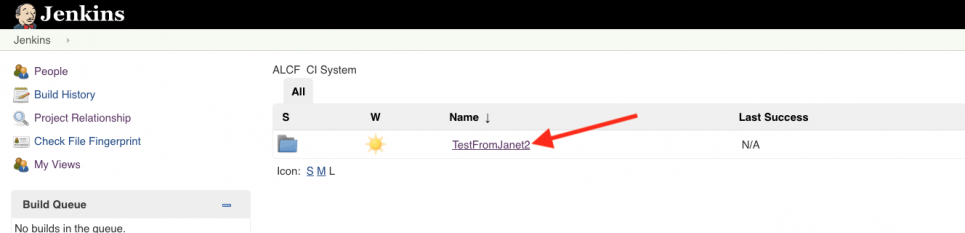
Nodes
Each CI project will have an assigned node for execution. Nodes execute jobs defined within a project, typically on the target system’s login node. Currently there are CI nodes configured for HPC systems Theta and Cooley, as well as non-HPC nodes with 32 cores (Intel Xeon Processor E5-2683 v4) and 128 GB RAM for generic x86 processing with access to the Mira shared filesystems.
In the example below, the node for this project is named ‘TestFromJanet2-Theta. Jobs and pipeline steps triggered from Jenkins will execute on the TestFromJanet2-Theta node which has been configured to use host: thetalogin1 and will use the project’s CI user ID (provided during on-boarding) to execute scripts or code just as if the end user had logged into the thetalogin1 node and executed the same set of actions manually from the command line.
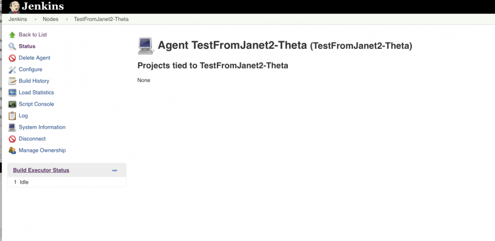
Job Configuration
When configuring any new job within a project there are some guidelines to follow for setting permissions and nodes. Project data is kept secure by setting up permissions at the project level and node selection controls where the job will execute.
When creating jobs, enable project-based security, set the inheritance strategy, and add your project’s group name to the permission matrix table. The example below has enabled project-based security, set the inheritance strategy to Do not inherit permission grants from other ACLs, and added the project’s group name ‘‘TestFromJanet2’ to the permission matrix granting all rights to the group.
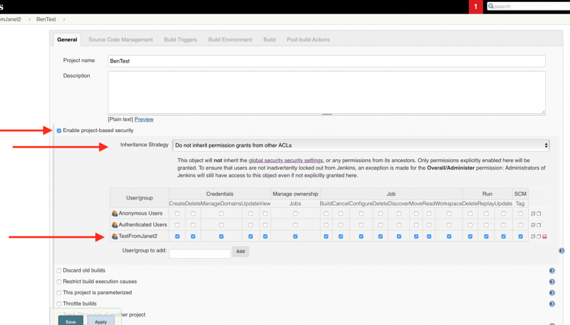
To assign the node that the project will use to execute jobs, select the option Restrict where this project can be run and enter the project’s assigned node. The example below has assigned the jobs to node: TestFromJanet2-Theta so that any time the job is executed, it runs on host: thetalogin1.
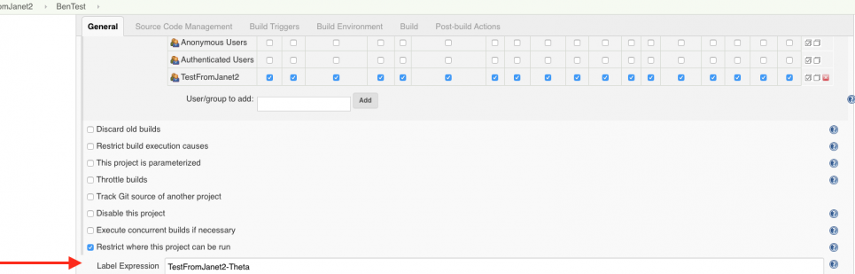
Common Jenkins Features
Version Control Features
Jenkins can connect to most common version control systems (VCS), including git/svn. The ALCF Jenkins instance can connect with local VCS hosted at at ANL as well as with external VCS, such as that hosted at Github.
On the job configuration page, look for the section Source Code Management (SCM). If it is there already, add it to the job. The required fields for SCM are Repository URL and Credentials. The example below shows a connection to the ALCF internal Gitlab VCS and uses previously setup credentials.
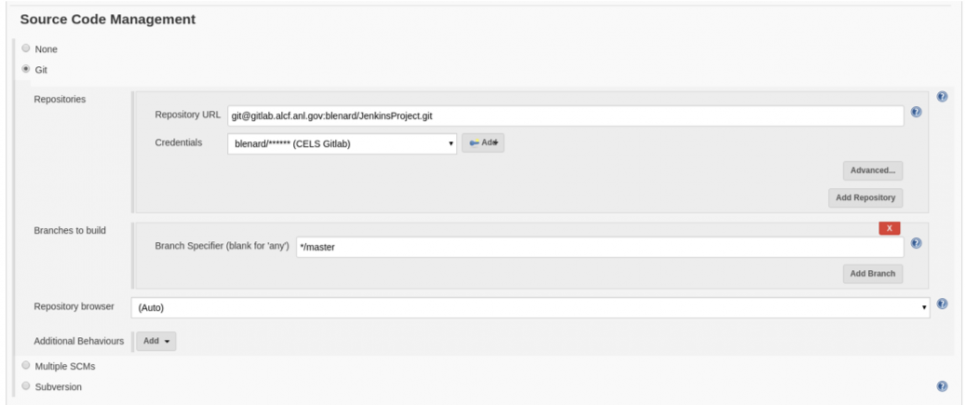
To use the new connection to the Git repository interactively, configure the job to be parameterized and add a a Git Parameter to the job. The example below shows the configuration to select a branch at build time.
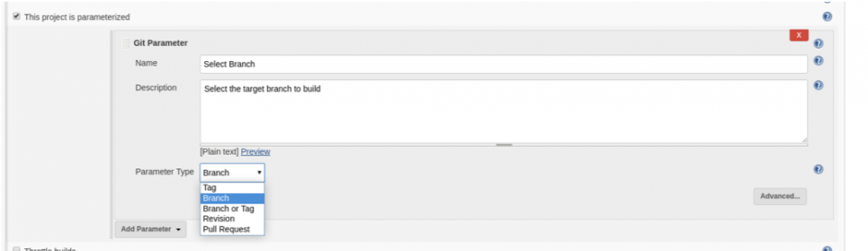
On the build screen, select from the drop-down menu the branch to be referenced during this job execution. The example below shows the list of available branches from the configured repository. It is automatically populated duing the Git connector configuration of the preceding steps. If a new branch is added to the Git repository, it will display in the populated list of avialable branches when the job runs in Jenkins.
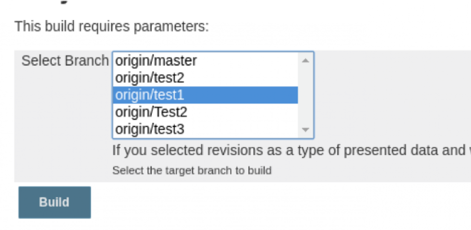
Build Steps
Build steps are where users define executable tasks and jobs do something interesting within an envionment. A core component of Jenkens, build steps can take a few different forms and are morst commonly configured to call remote scripts for code building and deployment. A build step can even contain the shell script contents to execute on the remote machine.
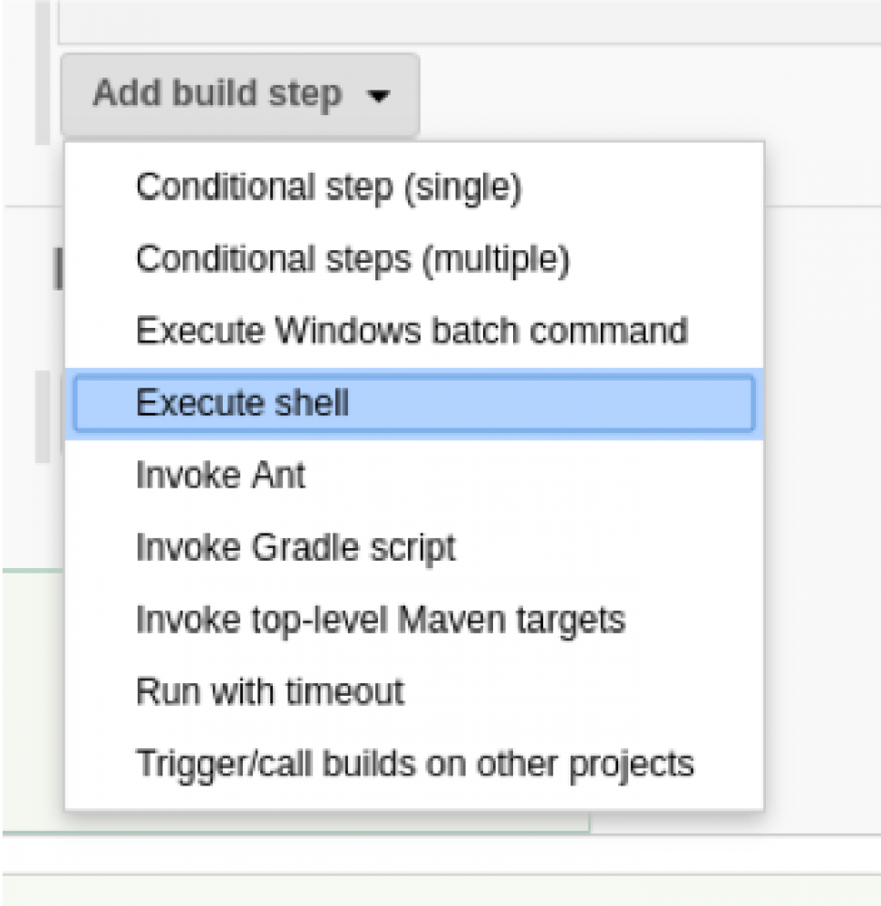
The example below uses the Execute Shell build step type and codes the shell logic within the Jenkins portal.
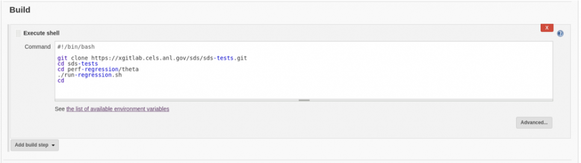
Pipelines
Pipelines in Jenkins allow for more advanced execution logic and are written in Groovy. A pipeline can be added directly to your project as an object using the New Item link. More commonly, they are defined in a "Jenkinsfile" and stored in VCS along with the project code. The Jenkinsfile can be created and edited outside of the Jenkins system using any text editor.
To add a pipeline manually, select Pipeline from the new New Item dialog box.
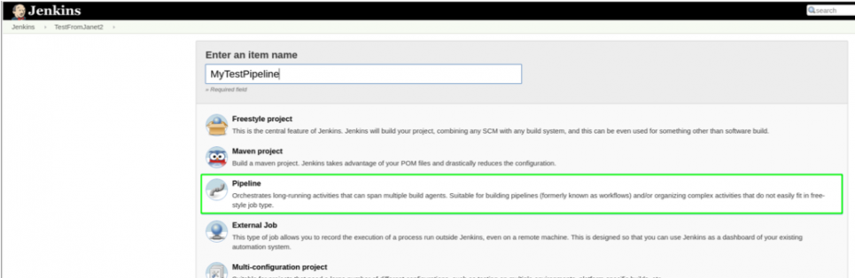
The pipeline can then be configured and edited from the project folder in the same way as jobs, as shown in the example below.
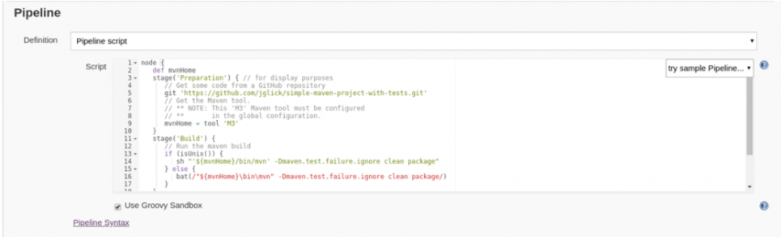
To add a pipeline using a Jenkinsfile in SCM, add the pipeline object as shown below. On the pipeline configuration page, select Pipeline script from SCM and provide the SCM connection details along with the Script Path. The Script Path is the path-to and filename where the Jenkinsfile is located within the SCM repository. The example below uses a Jenkinsfile stored in the project source code from the ALCF Git repository, and the Jenkinsfile containing the Groovy code pipeline definition is located at scripts/Jenkinsfile from the repository root.
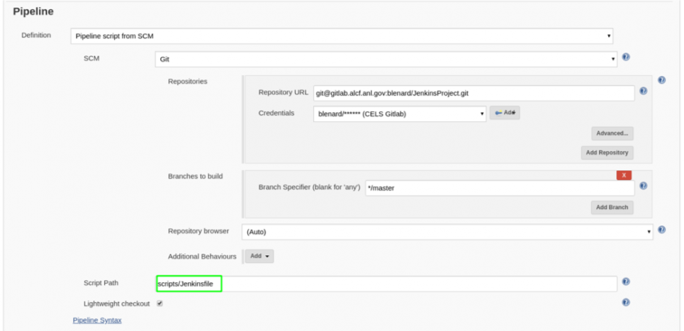
Triggers
Triggers are events that intitiate tasks in Jenkins. Triggers can be called a few different ways, including directly by a user via the Build Now action (a time-based trigger similar to a Cron system), or based on commits made to source control.
The example below shows a time-based configuration to run the job on a regular schedule. Details on the scheduling syntax can be found by clicking the blue question mark to the right of the Schedule field.
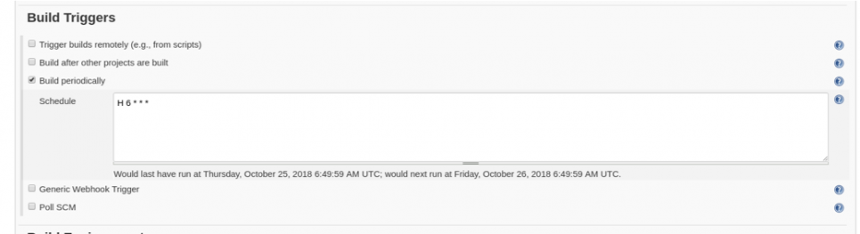
Console Output
Jenkins provides console output and saves this history for each job run. During job execution you can view the live output from the tasks in a display similar to what would be seen if the commands were run directly in an interactive console.
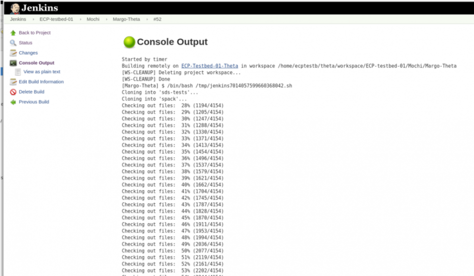
Credentials
Credentials are stored in Jenkins and used when connecting to remote resources that require authentication in a non-interactive manner. Once defined, credentials can be used throughout the Jenkins system when configuring jobs, SCM connections, SSH connections, etc.
To add a set of credentials, click on Credentials from the available options on the left-hand navigation menu. Then select System and click on the link for Global credentials.
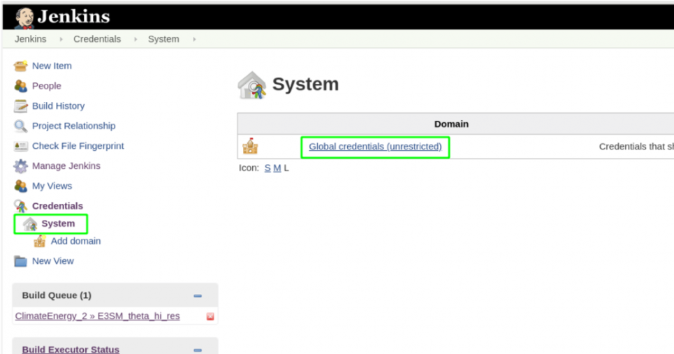
Click Add Credentials from the left-hand navigation menu and provide the required information. The example below configures a new credential set of type "SSH Username with private key." Make sure Scope is set to "Global." Provide the username, private key (copy and paste), and key passphrase, and then give a pertinent ID and detailed description to help identify and organize stored credentials in the system.
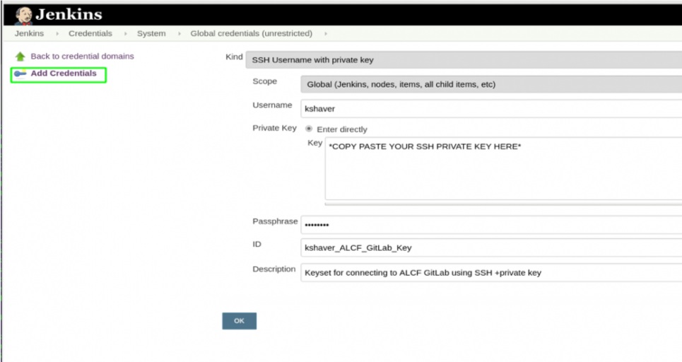
FAQS
Why does my project's execution node say it is offline? Node services for executing project tasks are inititated when there is demand for the node. The process of starting the node services acan take up to one minute; the status change is displayed in the Jenkins web portal. When there is no longer demand for the node, the services will stop again after one minute of idle time.
Why is my shell environment different when executing tasks on a Jenkins node? Since Jenkins uses SSH with no tty, any shell scripts need to have this at the top so that login scripts are run against the session:
#!/bin/bash -1
Glossary
Continuous Integration (CI) - The process of automating the build and testing of code every time developers commit changes to version control.
Pipeline - A CI pipeline is a list of tasks or jobs that are defined and executed as a procedure within a project. Pipeline is analogous to workflow.
Source Control Management (SCM) - A term used in Jenkins to describe objects related to version control.
Version Control System (VCS) - Software that manages access, storage, and revision history for a code respository.
Appendix
Abbreviated Setup
- Request CI capabilities for your project by emailing the ALCF Service Desk.
- Add jobs and pipelines to the project folder space to handle code compiling and testing.
- Configure jobs with credentials, SCM integrations, and trigger components depending on the intended behavior for your project.
- Execute jobs and pipelines by invoking the configured triggers.